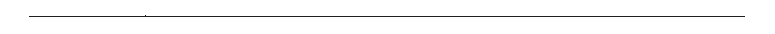

Cantidad de materias aprobadas: 40
INGLES NIVEL I
INGLES NIVEL II
INGLES NIVEL III
INGLES NIVEL IV
COMPUTACION NIVEL I
COMPUTACION NIVEL II
ANALISIS MATEMATICO I
ELEMENTOS DE PROGRAMACION
SISTEMAS DE REPRESENTACION
TECNOLOGIA INGENIERIA Y SOCIEDAD
ALGEBRA Y GEOMETRIA ANALITICA I
MATEMATICA DISCRETA
QUIMICA GENERAL
FUNDAMENTOS DE TIC'S
FISICA I
ALGEBRA Y GEOMETRIA ANALITICA II
ANALISIS MATEMATICO II
FISICA II
REQUERIMIENTOS PARA LA INGENIERIA
ARQUITECTURA DE COMPUTADORAS
PROGRAMACION - Incluye TCP
PROBABILIDAD Y ESTADISTICA
AUDITORIA Y SEGURIDAD INFORMATICA
PROGRAMACION AVANZADA - Incluye TCP
BASE DE DATOS
SISTEMAS OPERATIVOS
ANALISIS DE SISTEMAS - Incluye TCP
CALCULO NUMERICO
INGENIERIA DE REQUERIMIENTOS
COMUNICACION DE DATOS
DISEÑO DE SISTEMAS - Incluye TCP
ANALISIS DE SOFTWARE
REDES DE COMPUTADORAS
SISTEMAS OPERATIVOS AVANZADOS
LENGUAJES Y COMPILADORES
GESTION ORGANIZACIONAL
INGENIERIA DE SOFTWARE - Incluye TCP
AUTOMATAS Y LENGUAJES FORMALES
SEGURIDAD EN REDES
GESTION DE RRHH EN PROY IT
Estudios:
Carrera: Ingenieria en informatica
Año de ingreso: 2012
Institución: Universidad Nacional de La Matanza
Materias restantes: 4

Título intermedio universitario
Tecnico universitario en desarrollo de software
Institución: Universidad Nacional de La Matanza
Año:2021
Título Secundario completo
Área Humanidades y Ciencias Sociales
Institución: E.E.S Nº 23
Conocimientos y aptitudes adquiridos durante la carrera:
Experiencia laboral:
De manera Freelance :